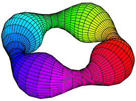

Sean Cleary
Professor
Department of Mathematics, The City College of New York
Department of Mathematics, The Graduate Center of CUNY
CCNY Office: 8134 NAC
CCNY Phone: (212) 650-5122
Fax: (212) 650-5381
ORCID: 0000-0002-3123-8658
Graduate Center Office: 4217.02

Research
Group theory, geometry and topology. In particular,
geometric group theory, Thompson's groups and spaces of trees.
Instruction
Course and teaching webpages
Department and Service
Graduate program information
Office Hours are on my departmental webpage.
Other:
Computers and Computation
Mathematica, Apple and Linux items
Non-Mathematical Interests:
A few stories about climbing and biking, some pictures and links
and other assorted things.
Department, School and University Links:
Mailing Address:
Sean Cleary
Department of Mathematics R8133
The City College of New York
Convent Ave & 138th
New York, NY 10031
E-mail:
cleary (at sign) sci.ccny.cuny.edu